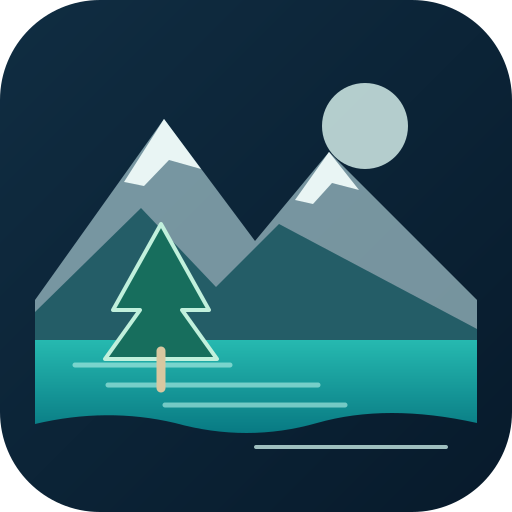

Forist
Esc
YOUR WORKSPACE
Good to see you.
Favorites
FORIST CONTROL
Quick settings
☼85%
These controls are visual prototype interactions. They do not change your computer's real hardware settings.
FORIST OS
Your forest. Your workspace.
7:30 PM
Prototype lock screen — no password protection is implemented.